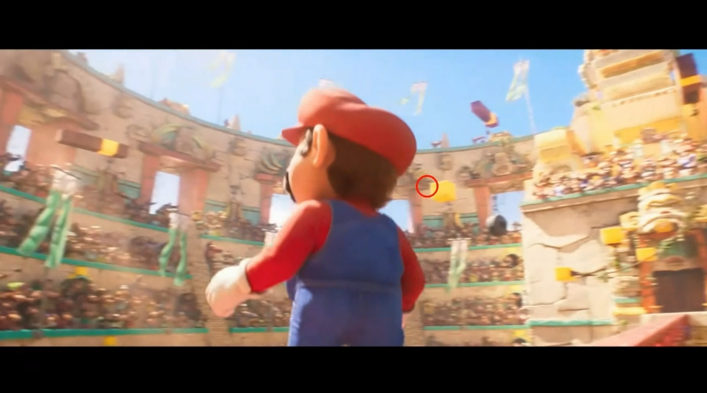

Eye Tracking Tool

Eye Tracker tool with an incorporated video recorder that generates a video file with the observed points.
Features
- 👁️ Calibration system for an accurate performance on each device
- 🗺️ Can generate heat maps with the most viewed screen zones
Development Highlights
- 🖥️ Made using Python and TKInter